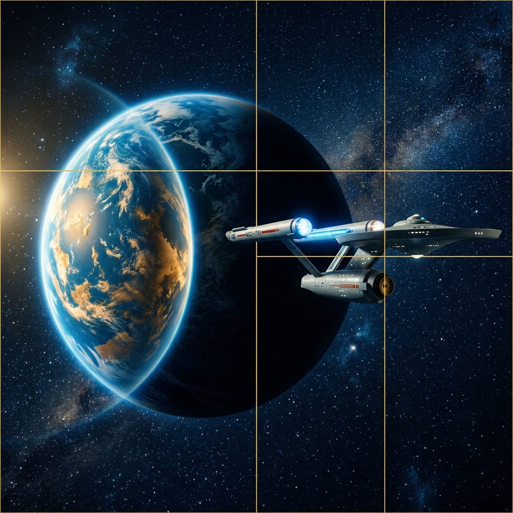

Entre em Contato
Tem alguma sugestão, dúvida sobre a série ou quer apenas compartilhar sua paixão por Star Trek? Preencha o formulário abaixo e entraremos em contato.
Informações
Este é um site fan, desenvolvido como projeto acadêmico para a disciplina de Desenvolvimento Web. Todo o conteúdo é de uso educacional.
Nota Importante
Star Trek é uma propriedade da Paramount Pictures. Este site foi criado apenas para fins educacionais e não tem nenhuma afiliação oficial com a franquia.

Perguntas Frequentes
Onde posso assistir Star Trek Discovery?
A série está disponível na plataforma Paramount+. Verifique a disponibilidade na sua região.
Quantas temporadas existem?
Star Trek Discovery possui 5 temporadas no total. Este site aborda as 4 primeiras.
Este site é oficial?
Não. Este é um site fan criado como trabalho acadêmico da disciplina de desenvolvimento web. Não possui afiliação com a Paramount Pictures.
Precisa ter visto Star Trek clássico para entender?
Não é necessário, mas ajuda! Discovery foi criada para atrair novos fãs, sendo acessível mesmo para quem nunca assistiu a franquia antes.